A

SparkSpace is a cloud service that inspires creativity in the workplace, and allows for the integration of content storage, organization, browsing, creation and collaboration, with all of the best tools for the job.

ROLES
- research
- ux design
- visual design
- branding & identity
DURATION
- 7 weeks
DELIVERABLES
- user surveys
- competitive analysis
- user personas
- user stories & flows
- wireframes
- branding & identity
- mockups & prototypes
- user testing
TOOLS
- adobe photoshop
- adobe illustrator
- figma
- invision
- draw.io
- google drive
- usability hub
PROBLEM
There are many cloud storage sites on the market, but there is a gap where creation and creativity meet. There are no sites built for creatives that provide inspiration in the workplace while giving access to all the tools they need to create.
SOLUTION
SparkSpace becomes a new kind of cloud storage space where creativity rules. This is a site designed for creatives who want to do everything all in one place; upload, organize, create, discover, save, and share. They are able to access their work easily and work more efficiently by having one space that meets all of their needs, that fuels their creativity.
RESEARCH & DISCOVERY
USER SURVEYS
I created two surveys to discover what users were looking for in a cloud storage site, what their current sites were lacking, and what would be beneficial to them on a daily basis.
SURVEY 1:
Designed to find out about what users like and prefer in their cloud storage sites.
I discovered that they want something that is easy to use that is great for sharing files, giving presentations, and connecting with coworkers more
easily.

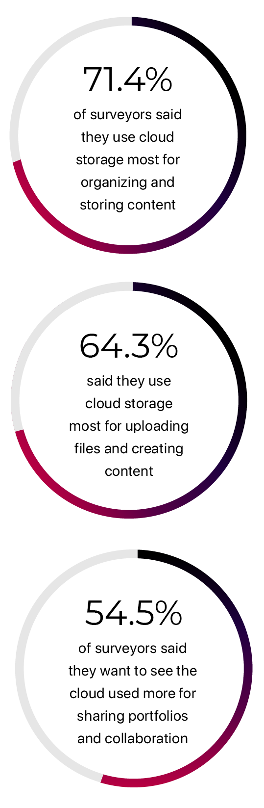
This survey didn’t provide me with all of the information I needed, so I decided to follow up with a second survey, specifically designed for people in the creative industry, who rely on inpiration and creativity on a daily basis.
SURVEY 2:
Aimed toward people in the creative industry.
I asked questions like: “does your current cloud service inspire creativity in the workplace,” and “what would you like your cloud service to provide more of in your workplace?”

This survey didn’t provide me with all of the information I needed, so I decided to follow up with a second survey, specifically designed for people in the creative industry, who rely on inpiration and creativity on a daily basis.
KEY TAKEAWAYS:
/ Users seemed very interested in a cloud space that inspires and promotes creativity
/ Users want a file-sharing service that allows for real time collaboration and sharing of work
/ Users want to be able to edit content from any location and any device
/ Users want an application that syncs with other apps, like Word and Adobe
/ Users want real-time collaboration, by being able to sketch, comment and edit directly through the cloud
/ Users want to search and share images, videos, and inspiration
COMPETITIVE ANALYSIS
The next step in researching was to discover the competition and analyze what they are doing well and where they are falling short, to discover where a new competitor might fit in.
USER PERSONAS
Based on the researched gained in my user survey and competitive analysis, I was able to create two user personas of who I think would benefit from SparkSpace: the professional user and the student user.
GOALS:
Too many different tools & too many different applications
Hard to give/recieve real-time critiques over the web/outside the office
Has to filter through so many different websites to find inspiration
FRUSTRATIONS:
Be able to take every tool to create great designs, with her on the go
Annotate and collaborate by being able to sketch and comment directly through the cloud
Condense tools into one application to make it easier and faster
Easily search and share images, videos, and inspiration
Upload and organize all files into one place
Have all the presentation tools needed to present projects to clients and coworkers
GOALS:
Share inspiration and projects privately with his professor or in public forum with classmates
Upload or search and save images, videos and inspiration all in one place
Allow for real-time critique through the cloud with comments
and annotations
Condense all tools into one place to make it faster to navigate content
FRUSTRATIONS:
Tools aren’t all synced together
Takes so much time trying to upload everything into one application
Can’t edit files in the same place they are critiqued
Wants real-time critiques and feedback outside of class so he
knows direction to design in
INFORMATION ARCHITECTURE
USER STORIES & FLOWS
After figuring out who my users might are, and what they’re interested in seeing in cloud storage site, I needed to create my user stories and flows, to map out the structure for what users would want to do in this new cloud app and how they can access different functions. I spent a lot of time on these user flows, trying to simplify my complex design ideas.
WIREFRAMES
When drafting my wireframes, I wanted to keep the layout and design as simple as possible to allow for easy navigation throughout the site. I started by creating rough, hand-drawn drafts.
USER TESTING: ROUND 1
In order to see how users responded to key elements of the layout of my site, I created a test. I wanted to make sure everything was easily navigable and understandable. I was able to fix little issues, such as, where the “upload” button was located and gather some helpful feedback about what my testers thought about the site so far.
VISUAL DESIGN
BRANDING & IDENTITY
Looking back through my reseach, I knew I wanted to create a brand that centered around creativity and inspiration. With that in mind, I thought the word “spark” emitted the enthusiasm and energy that I want this site to bring users. And so, SparkSpace was born. The logo that I chose for the site is an “S” that wraps around a box, which I feel represents the name of the site, well.
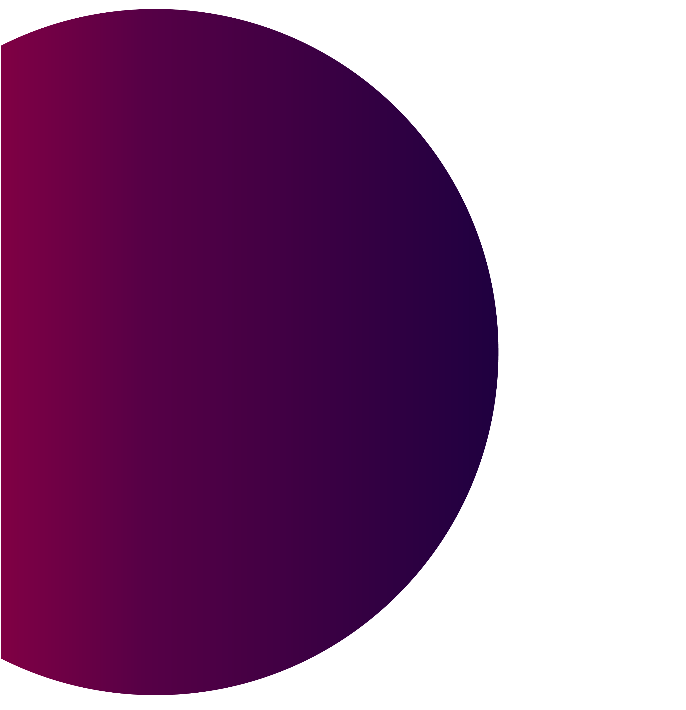
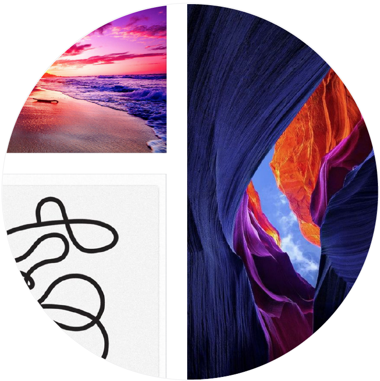
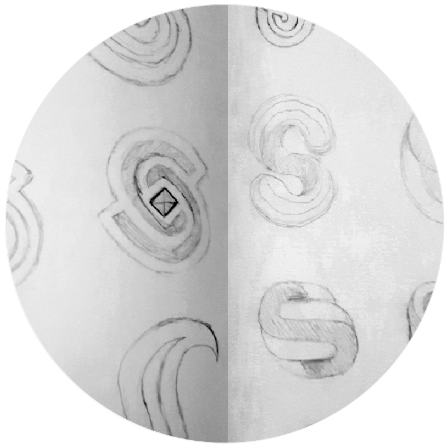
Logo Refinement
Colors
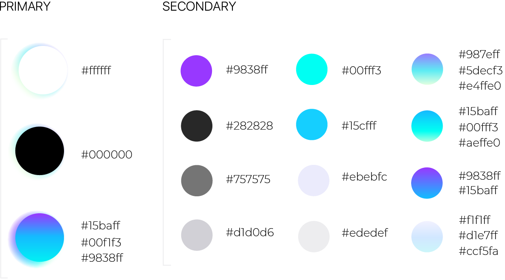Fonts & Typography
Logo Marks
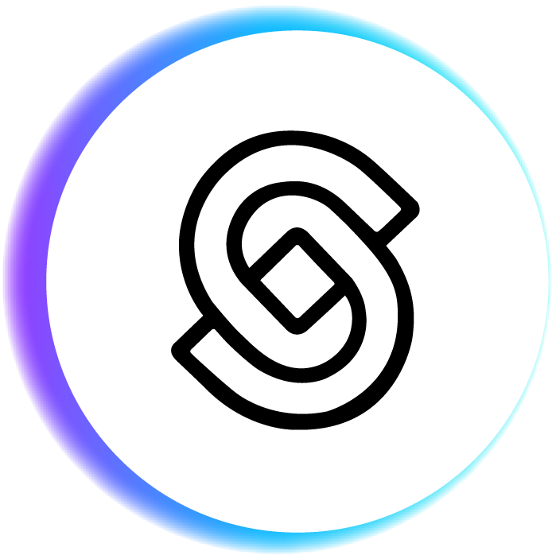
Logo Refinement
Colors
Logo Marks
This brand has a unique color gradient that I think lends to the modern and fun style of the brand. I used gradients of blues, purples and turquois in my design. the color blue I used has a sense of energy to it, but also gives a kind of calm feeling while the purple emits feelings of creativity and imagination and the turquoise adds that sense of fun. Black and white are dominating colors as well, as they create a very modern look and feel to the site while giving that power and elegance to it as well. There are shades of greys and accents of purples, and blues.
HIGH-FIDELITY MOCKUPS
Based on my wireframes and branding, I began drafting my high fidelity mockups. while creating these, I refined my style guide to reflect my designs.
MOCKUPS ROUND 1:
These first iterations were overly designed and a little hard on the eyes. I receive feedback and critiques that were very helpful in simplifying my designs. I wanted a more clean, modern feel, with less gradient and a lot less going on.
I created a few different variations which I tested with users.
USER TESTING
PREFERENCE TESTING
I conducted a series of preference tests to help solidify my designs. These were small studies regarding color and balance mostly. I wanted to learn which styles people preferred.
TEST 1:
A
B
70%
of testers said they prefer option A, because it looks more inviting, light, clear and clean.
TEST 2:
A
B

C
57%
of testers said they prefer option A. They liked the colored gradient and the clean background feel.
57%
of testers said they prefer option B. they thought the gradient added a nice pop of color, but the information gets a little hard to read.
I decided to keep the colored gradient wave, since people tended to like it, but move it down and use it to highlight the subscriptions on the bottom of the page. I also wanted to make sure everything was very legible.
TEST 3:
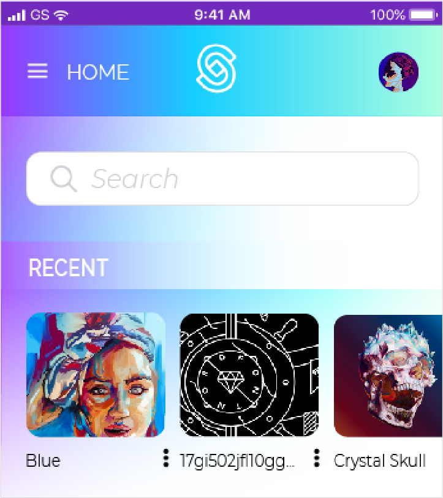
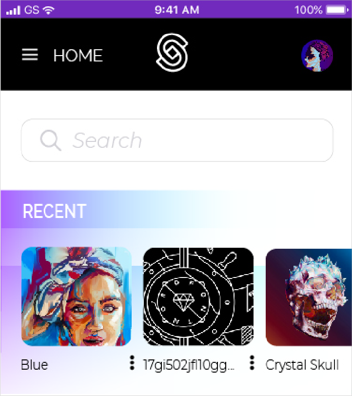
B
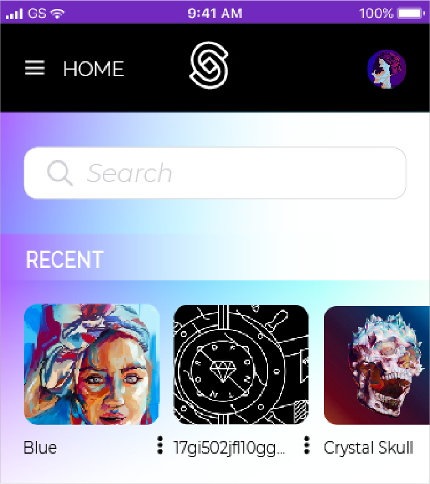
C
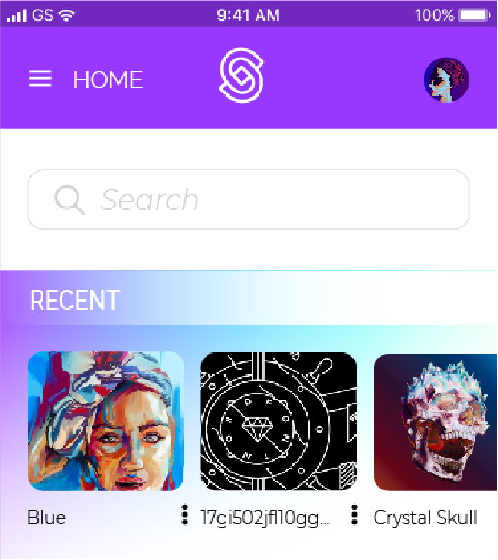
D
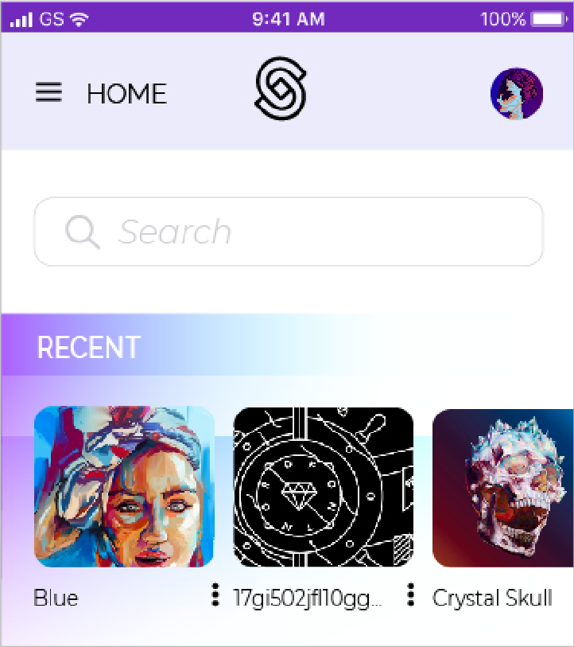
E
57%
of testers said they prefer option E. They liked the lighter colored navbar at the top because it is softer and simpler.
MOCKUPS ROUND 2
Based on the feedback received from my preference tests and other opinions, I was able to make edits to my designs. I decided to use the gradient as a bold background or navbar color and let the rest of the page be dominantly white, to help create the modern, minimalist look and feel I was going for.
My landing page design changed quite a bit. I wanted to create more of an insentive to become a user of sparkspace, so i made little illustrations showing what users could do with the site, as well as adding the gradient wave with the subscriptions. This allowed me to eliminate some of the buttons at the top of the page as well.
I followed the same process of toning down all the excessive gradients and minimalizing unnecessary elements and buttons. To create my minimalist feel, I got rid of outlines around everything and scaled down the font sizes.
PROTOTYPING
It was now time to create a testable prototype which I tested a few times with different users to make sure it was easily navigable and had a nice flow. It allowed me to tweak the design as well and make little changes, like adding “back” buttons to different
pages.
I received a lot of feedback about my design from different students and by participating in live, group, design sessions, where i was able to get a more in-depth critique. I learned that some of my buttons were repetitive and unnecessary,
while some were confusing, and I needed to fix navigation issues. I also got a lot of feedback to condense different elements, since I tend to over-design at times. This was my favorite feedback so far, because it was from other designers
and students like myself.
CONCLUSION
SparkSpace was such a fun project to work on. I was able to have a hands-on approach to the entire process of researching, information architecture, branding and visual design, and user testing, which was new to me, coming from a graphic design and art
backgound. I learned that user feedback was vital to the design of the site, as I got to see what different people thought worked in the design and layout of the site, and what needed improvement, so that my final iterations would be successful.
This was something I wasn’t used to either, but really helped me critique my work in new ways.
I definitely had my struggles throughout the project, but I was able to overcome the struggles and really grow and learn by trial and error. It was so satisfying seeing all of my hard work come together to create a fun, modern, clean
design. this project was one of my favorites to work on, because I believe in the content of the site and I was so excited to create something that I would want to use everyday for my own designs.